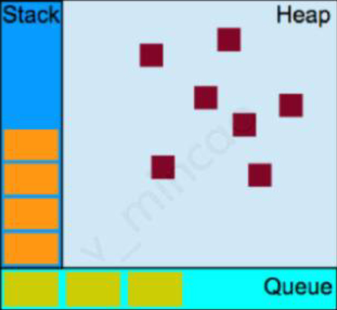

1. JS的语法槽点
- 没有块作用域（ES6中let定义的变量拥有块作用域）
- 诡异的隐式类型转化
- 作用域自动提升
- 回调地狱
- 费解的原型继承
- 没有模块、命名空间
- 灵异的this变量
- 浏览器兼容
2. JS规范版本历史
- 1997.07 1.0
- 1998.06 2.0
- 1999.12 3.0
- 2007.10 4.0 草稿
- 2008.07 5.0
- *2009 Node Js
- *2010 npm
- 2011.06 5.1
- *2012 webpack
- *2013 electron
- 2015.06 6(ES6/ES2015)
- 2016.06 7(ES7/ES2016)
- 2017.06 8(ES8/ES2017)
3. 单线程异步
- Javascript是单线程，但浏览器不是单线程

- 左边的栈存储的是同步任务，就是那些能立即执行的，不耗时的任务，如变量和函数的初始化、事件绑定
- 右边的堆用来存储变量的声明、对象
- 下面的队列就是任务队列。一旦某个异步任务有了响应就会被推入队列中、如用户的点击事件、浏览器收到服务的响应和setTimeout插入的事件。每个异步任务都和一个回调函数相关联